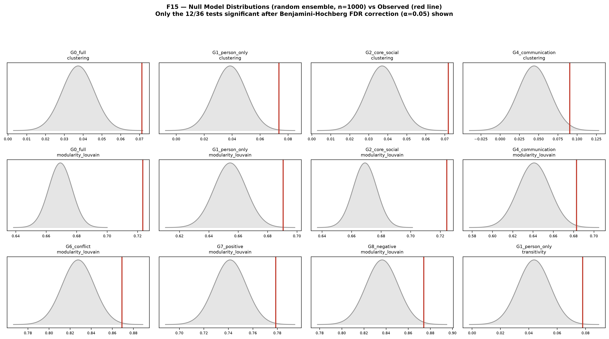
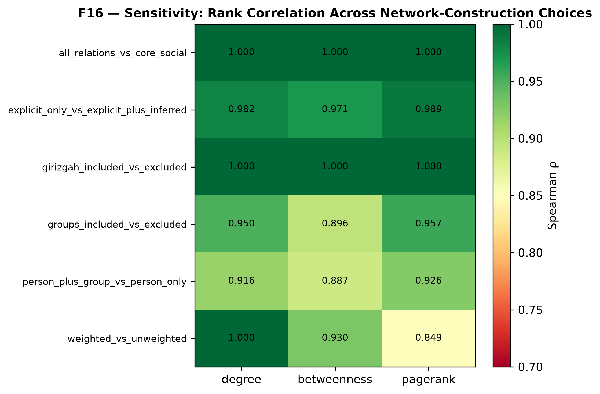
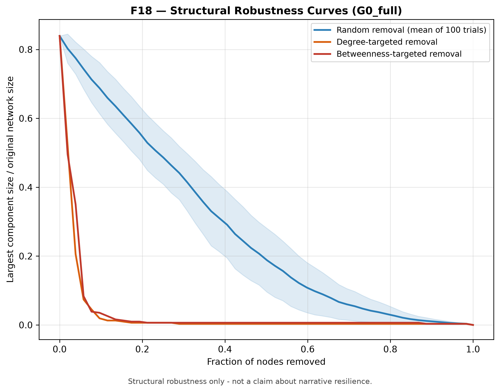

Analysis
Summary of every analytical stage, each explicitly labeled descriptive/exploratory or statistically validated.
Corpus-level network metrics
| network | n_nodes | n_edges | density | average_clustering | transitivity | degree_assortativity |
|---|---|---|---|---|---|---|
| G0_full | 311 | 376 | 0.007800 | 0.071304 | 0.040797 | -0.192043 |
| G1_person_only | 154 | 182 | 0.015449 | 0.073488 | 0.078020 | -0.165118 |
| G2_core_social | 309 | 374 | 0.007859 | 0.071910 | 0.041577 | -0.191415 |
| G3_kinship | 83 | 61 | 0.017925 | 0.000000 | 0.000000 | -0.107559 |
| G4_communication | 74 | 73 | 0.027027 | 0.090457 | 0.061224 | -0.330866 |
| G5_cooperation_support | 73 | 65 | 0.024734 | 0.018379 | 0.013825 | -0.185733 |
| G6_conflict | 114 | 92 | 0.014283 | 0.003036 | 0.013333 | -0.240524 |
| G7_positive | 127 | 116 | 0.014498 | 0.029166 | 0.020380 | -0.226361 |
| G8_negative | 126 | 102 | 0.012952 | 0.002766 | 0.012448 | -0.216262 |
| G9_directed | 221 | 324 | 0.006664 | 0.081163 | 0.043781 | -0.215968 |
| G10_weighted | 311 | 376 | 0.007800 | 0.071304 | 0.040797 | -0.192043 |
| G11_unweighted | 311 | 376 | 0.007800 | 0.071304 | 0.040797 | -0.192043 |
Note: degree assortativity values above are descriptive only — null-model testing (below) found none of them statistically significant after multiple-testing correction.
Null model validation
12 / 36 tests remain significant after Benjamini-Hochberg FDR correction (α=0.05). Community modularity is validated as a non-random signal (not a degree-sequence artifact) in 7 of 9 networks tested; degree assortativity is not supported in any network (an earlier “disassortative” claim is withdrawn). The kinship network (G3) shows no deviation from its null, but it is a forest, so its clustering and transitivity tests are uninformative.
| network | metric | observed | z_score | empirical_p | bh_qvalue |
|---|---|---|---|---|---|
| G0_full | modularity_louvain | 0.723464 | 7.038603 | 0.000999 | 0.011988 |
| G2_core_social | clustering | 0.071910 | 4.095698 | 0.000999 | 0.011988 |
| G2_core_social | modularity_louvain | 0.724470 | 6.884629 | 0.000999 | 0.011988 |
| G0_full | clustering | 0.071304 | 3.940297 | 0.001998 | 0.017982 |
| G1_person_only | modularity_louvain | 0.690602 | 3.275892 | 0.002997 | 0.021578 |
| G1_person_only | clustering | 0.073488 | 3.013157 | 0.003996 | 0.023976 |
| G1_person_only | transitivity | 0.078020 | 3.004597 | 0.005994 | 0.026973 |
| G6_conflict | modularity_louvain | 0.869211 | 2.711101 | 0.005994 | 0.026973 |
| G7_positive | modularity_louvain | 0.778686 | 2.816294 | 0.007992 | 0.031968 |
| G8_negative | modularity_louvain | 0.874087 | 2.575740 | 0.009990 | 0.035964 |
| G4_communication | modularity_louvain | 0.682867 | 2.621388 | 0.010989 | 0.035964 |
| G4_communication | clustering | 0.090457 | 2.202010 | 0.015984 | 0.047952 |

Sensitivity analysis
Rank-correlation of centrality across 6 network-construction choices (descriptive). Actor-type inclusion (person+group vs person-only; groups included vs excluded) and edge weighting change centrality rankings noticeably (Spearman ρ 0.85–0.96); the other three choices barely matter (ρ ≥ 0.97). The three larger-effect choices are close to each other and were not tested against one another, so none is singled out as the most consequential.
| pair | metric | spearman_rho | kendall_tau | top_10_overlap_fraction |
|---|---|---|---|---|
| person_plus_group_vs_person_only | degree | 0.915745 | 0.876185 | 1.0 |
| person_plus_group_vs_person_only | betweenness | 0.886878 | 0.799486 | 0.7 |
| person_plus_group_vs_person_only | pagerank | 0.925998 | 0.808715 | 0.8 |
| weighted_vs_unweighted | degree | 1.000000 | 1.000000 | 1.0 |
| weighted_vs_unweighted | betweenness | 0.929556 | 0.880577 | 0.6 |
| weighted_vs_unweighted | pagerank | 0.848906 | 0.698524 | 0.9 |
| all_relations_vs_core_social | degree | 1.000000 | 0.999962 | 0.9 |
| all_relations_vs_core_social | betweenness | 0.999996 | 0.999673 | 1.0 |
| all_relations_vs_core_social | pagerank | 0.999921 | 0.997858 | 0.9 |
| explicit_only_vs_explicit_plus_inferred | degree | 0.981676 | 0.975829 | 1.0 |
| explicit_only_vs_explicit_plus_inferred | betweenness | 0.970698 | 0.942854 | 0.8 |
| explicit_only_vs_explicit_plus_inferred | pagerank | 0.989342 | 0.955402 | 1.0 |
| groups_included_vs_excluded | degree | 0.949805 | 0.923502 | 0.9 |
| groups_included_vs_excluded | betweenness | 0.895652 | 0.827891 | 0.7 |
| groups_included_vs_excluded | pagerank | 0.957364 | 0.875669 | 0.9 |
| girizgah_included_vs_excluded | degree | 1.000000 | 0.999962 | 0.9 |
| girizgah_included_vs_excluded | betweenness | 0.999996 | 0.999756 | 1.0 |
| girizgah_included_vs_excluded | pagerank | 0.999673 | 0.997148 | 0.9 |

Structural robustness
Robust to random node loss, fragile to targeted (degree/betweenness) attack — a classic hub-driven network pattern (G0_full only; thresholds are relative to the original 311 nodes; targeted crossings are resolved to one 6-node step). This describes graph connectivity only, not narrative resilience.

Full reports
Network construction & descriptive analysis · Advanced network analysis · Null models · Sensitivity & robustness